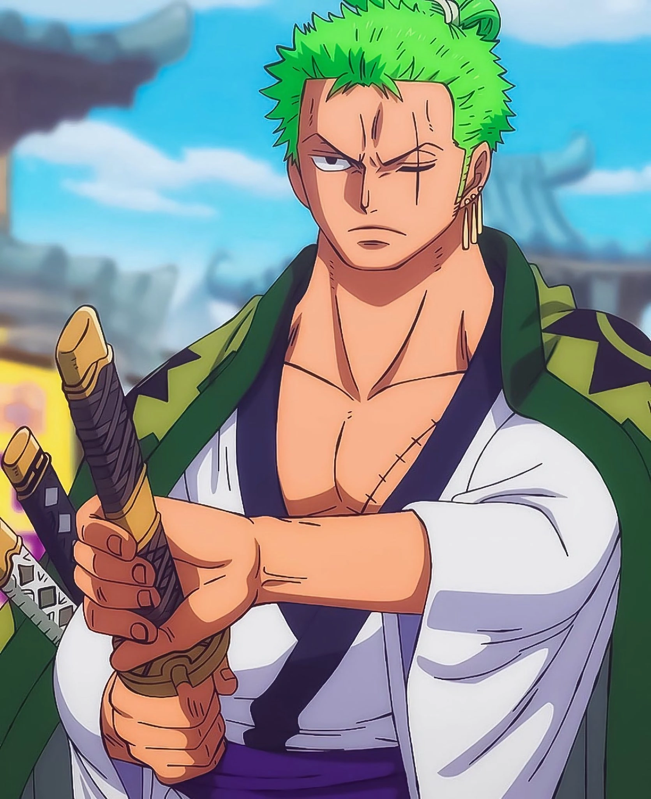

Roronoa Zoro is the swordsman of the Straw Hat Pirates and one of the most skilled fighters in the world. Before joining Luffy, he was a traveling bounty hunter known for his unmatched determination and his dream of taking Dracule Mihawk's title and becoming the worlds strongest swordsman.
• Master of the Three-Sword Style (Santoryu)
• Incredible physical strength and endurance
• Advanced sword techniques such as Lion’s Song and Dragon Twister
• Capable of using abilites such as Haki and Conquerers Haki.
Episode 1 / Chapter 3
Loyal, disciplined, fearless, and often blunt. Zoro is known for his strong sense of honor and his unwavering commitment to his captain and crew.